🚨Правила поведінки при сигналі “повітряна тривога”
При отриманні сигналу “повітряна тривога” в місті Києві лекція буде призупинена, а студенти мають перейти до укриття. Після отримання сигналу “відбій повітряної тривоги” лекція продовжиться 📢
При отриманні сигнали “повітряна тривога” в інших регіонах України студенти мають від’єднатися від лекційного заняття та перейти до укриття за місцем перебування. Після отримання сигналу “відбій повітряної тривоги” студенти мають повернутися до навчання⚠️
Кореляція
Поняття кореляції
Коефіцієнт кореляції у своєму статистичному сенсі позначає силу і характер взаємозв’язку між двома кількісними змінними.
Код
# Set a random seed for reproducibilitynp.random.seed(42)# Function to generate datasets with specified correlationdef generate_dataset(correlation): mean = [0, 0] cov_matrix = [[1, correlation], [correlation, 1]]# Generate random data with the specified correlation data = np.random.multivariate_normal(mean, cov_matrix, 100)# Create a DataFrame df = pd.DataFrame(data, columns=['x', 'y'])return df# Generate datasets with positive, negative, and no correlationpositive_corr_data = generate_dataset(0.8)negative_corr_data = generate_dataset(-0.8)no_corr_data = generate_dataset(0)# Plot the datasets with regression linesplt.figure(figsize=(15, 4))# Positive Correlationplt.subplot(131)sns.regplot(x='x', y='y', data=positive_corr_data, color='blue', ci=None)plt.title('Позитивна кореляція')# Negative Correlationplt.subplot(132)sns.regplot(x='x', y='y', data=negative_corr_data, color='red', ci=None)plt.title('Негативна кореляція')# No Correlationplt.subplot(133)sns.regplot(x='x', y='y', data=no_corr_data, color='green', ci=None)plt.title('Відсутня кореляція')plt.tight_layout()plt.show()
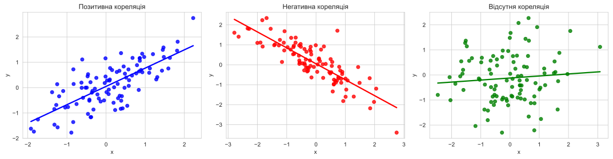
Коваріація
Коваріація - це міра взаємозв’язку між двома змінними, яка визначається як очікуване значення добутку відхилень від середніх значень.
Припустимо, нам потрібно розрахувати коефіцієнт кореляції для двох кількісних величин \(X\) і \(Y\). Відповідно, середнє за вибіркою для кожної з цих величин буде \(\bar{X}\) і \(\bar{Y}\). Тоді коефіцієнт коваріації:
У підручниках зі статистики часто зустрічається термін кореляційний коефіцієнт Пірсона, який є частковим випадком коефіцієнта кореляції.
Перевірка гіпотези про кореляцію
\[
H_0: r = 0
\]
\[
H_1: r \neq 0
\]
Статистика критерію:
\[
t = \frac{r \sqrt{n-2}}{\sqrt{1 - r^2}} \sim t_{n-2}
\]
де \(r\) — коефіцієнт кореляції Пірсона; \(n\) — кількість спостережень у вибірці.
Критичне значення критерію Стьюдента для рівня значущості \(\alpha = 0.05\) і \(n-2\) ступенів свободи: \(t_{\alpha/2, n-2} = 2.045\)
Якщо \(|t| > t_{\alpha/2, n-2}\), то нульову гіпотезу відхиляють.
Умови застосування критерію Стьюдента
Взаємозв’язок між змінними має бути лінійним і монотонним.
Відсутність викидів
Нормальний розподіл змінних
У разі порушення цих припущень можуть бути корисними коефіцієнти кореляції Спірмена й Кендалла, які замість реальних значень аналізують їхні ранги.
Ні те, ні інше не є панацеєю, і за особливо сильних порушень припущень (особливо першого) вони також можуть бути неадекватними. Уважно вивчайте свої дані та їхній характер!
Питання: Чому ми співставляємо генеральну сукупність і вибірку?
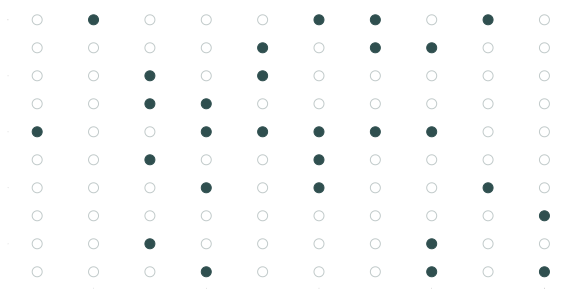
Генеральна сукупність
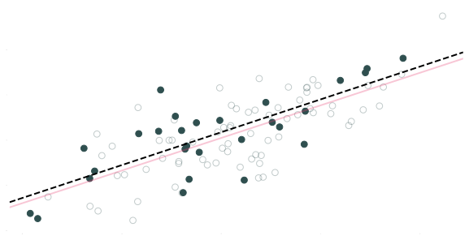
Зв’язок у генеральній сукупності
\[ y_i = 0.05 + 0.72 x_i + u_i \]
Зв’язок у вибірці
\[ \hat{y_i} = 0.18 + 0.73 x_i \]
Генеральна сукупність і вибірка
Питання: Чому ми співставляємо генеральну сукупність і вибірку?
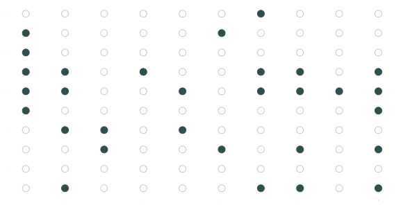
Генеральна сукупність
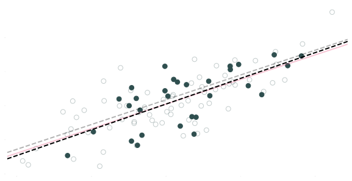
Зв’язок у генеральній сукупності
\[ y_i = 0.05 + 0.72 x_i + u_i \]
Зв’язок у вибірці
\[ \hat{y_i} = 0.05 + 0.76 x_i \]
Генеральна сукупність і вибірка
Питання: Чому ми співставляємо генеральну сукупність і вибірку?
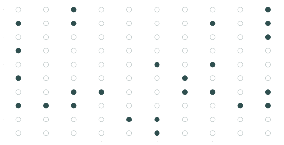
Генеральна сукупність
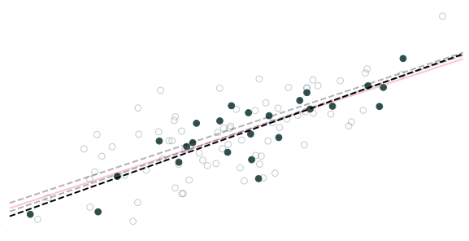
Зв’язок у генеральній сукупності
\[ y_i = 0.05 + 0.72 x_i + u_i \]
Зв’язок у вибірці
\[ \hat{y_i} = 0.0 + 0.78 x_i \]
Давайте повторимо це 10 000 разів (Монте-Карло).
Генерація датасету
np.random.seed(12468)def fit_linear_regression(size): sampled_data = pop_df.sample(n=size) model = sm.OLS(sampled_data['y'], sm.add_constant(sampled_data['x'])).fit()return model.paramssim_results = [fit_linear_regression(size=n_s) for _ inrange(int(1e4))]sim_df = pd.concat([pd.DataFrame(result) for result in sim_results], ignore_index=True, axis=1).T
Питання: Чому ми співставляємо генеральну сукупність і вибірку?
У середньому наші лінії регресії дуже добре відповідають лінії генеральної сукупності
Однак окремі лінії (зразки) можуть промахнутися.
Відмінності між окремими вибірками та генеральною сукупністю призводять до невизначеності.
Генеральна сукупність і вибірка
Питання: Чому ми співставляємо генеральну сукупність і вибірку?
Відповідь: Невизначеність має значення.
\(\hat{\beta}\) сама по собі є випадковою змінною, яка залежить від випадкової вибірки.
Коли ми беремо зразок і запускаємо регресію, ми не знаємо, чи це «хороший» зразок (\(\hat{\beta}\) близький до \(\beta\)) чи «поганий зразок» (наш зразок сильно відрізняється від генеральної сукупності).
Оцінювання параметрів регресії
Оцінювання параметрів регресії
Ми можемо оцінити лінію регресії в Python:
lm = sm.OLS(y, sm.add_constant(x)).fit()
Але звідки такі оцінки?
Кілька слайдів назад:
\[ \hat{y}_i = \hat{\beta}_0 + \hat{\beta}_1 x_i \] що дає нам найкращий рядок через наш набір даних.
Але що ми маємо на увазі під «найкращою лінією»?
Бути «найкращим»
Питання: Що ми маємо на увазі під найкращою лінією?
Відповіді:
Загалом, найкраща лінія означає лінію, яка мінімізує суму квадратичних помилок (ESS):
\[ \text{ESS} = \sum_{i = 1}^{n} e_i^2\quad \]
де \(\quad e_i = y_i - \hat{y}_i\)
Звичайний метод найменших квадратів (OLS) мінімізує суму квадратів помилок.
На основі низки (здебільшого прийнятних) припущень, OLS
Є незміщенним
Це найкращий (мінімальна дисперсія) лінійний незміщений оцінювач
МНК
Давайте розглянемо набір даних, який ми згенерували раніше.
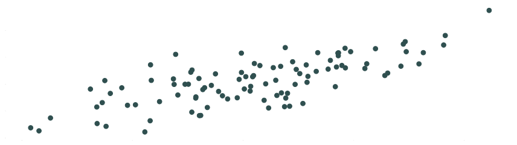
МНК
Для будь-якої лінії \(\hat{y} = \hat{\beta}_0 + \hat{\beta}_1 x\)
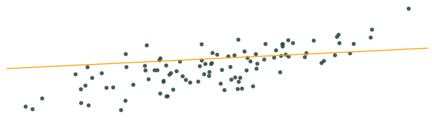
МНК
Для будь-якої лінії \(\hat{y} = \hat{\beta}_0 + \hat{\beta}_1 x\) ми можемо обчислити помилки: \(e_i = y_i - \hat{y}_i\)
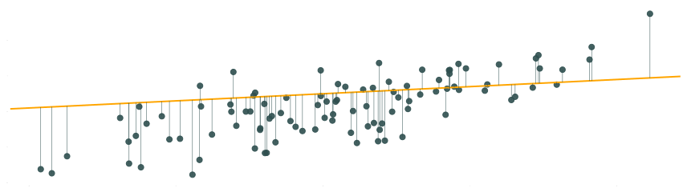
МНК
Для будь-якої лінії \(\hat{y} = \hat{\beta}_0 + \hat{\beta}_1 x\) ми можемо обчислити помилки: \(e_i = y_i - \hat{y}_i\)
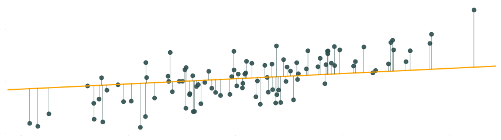
МНК
Для будь-якої лінії \(\hat{y} = \hat{\beta}_0 + \hat{\beta}_1 x\) ми можемо обчислити помилки: \(e_i = y_i - \hat{y}_i\)
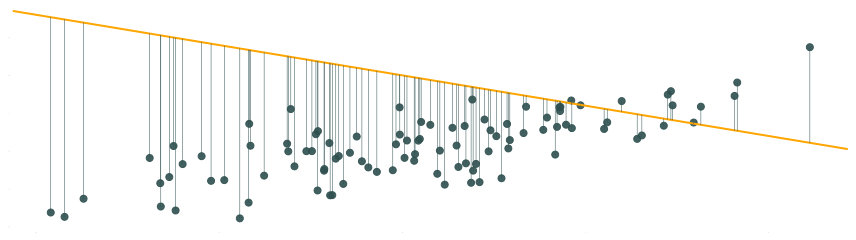
МНК
ESS зводить помилки в квадрат \(\sum e_i^2\): більші помилки отримують більші штрафи.
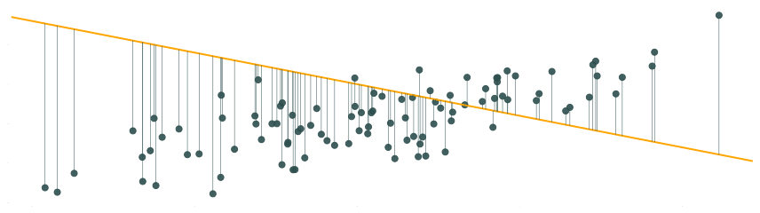
МНК
Оцінка МНК — це комбінація \(\hat{\beta}_0\) і \(\hat{\beta}_1\), які мінімізують ESS.
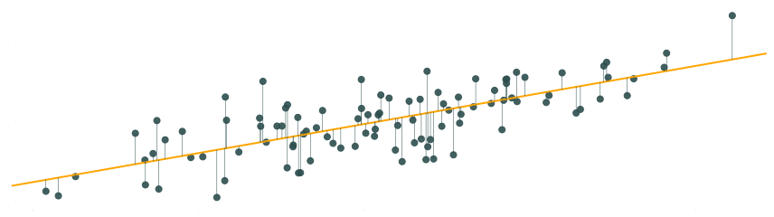
МНК
У простій лінійній регресії оцінювач МНК виходить із вибору \(\hat{\beta}_0\) і \(\hat{\beta}_1\), які мінімізують суму квадратів помилок (ESS), тобто,
Ми наближаємось. Нам потрібно мінімізувати ESS. Ми показали, як ESS пов’язано з нашою вибіркою (наші дані: \(x\) і \(y\)) і нашими оцінками (тобто, \(\hat{\beta}_0\) і \(\hat{\beta}_1\)).
Чи готові ми прийняти зміщення, щоб зменшити дисперсію?
В статистиці ми зазвичай дотримуємося незміщених оцінок. Але інші дисципліни (особливо у сфері ML) більше думають про цей компроміс.
The bias-variance tradeoff.
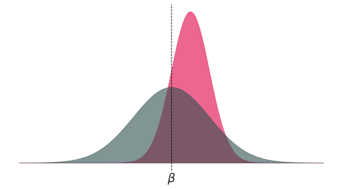
Властивості
Як ви вже могли здогадатися,
МНК є незміщеною оцінкою.
МНК має мінімальне відхилення серед усіх незміщених лінійних оцінювачів.
Властивості
Але… ці (дуже гарні) властивості залежать від ряду припущень:
Зв’язок генеральної сукупності є лінійним.
Наша змінна \(X\) є екзогенною, тобто, \(\mathop{\boldsymbol{E}}\left[ u \mid X \right] = 0\).
Змінна \(X\) має варіацію. І якщо існує кілька пояснювальних змінних, вони не є абсолютно колінеарними.
Збурення генеральної сукупності \(u_i\) незалежно та однаково розподілені за нормальним законом розподілу із середнім в нулі \(\left( \mathop{\boldsymbol{E}}\left[ u \right] = 0 \right)\) та дисперсією \(\sigma^2\) (тобто, \(\mathop{\boldsymbol{E}}\left[ u^2 \right] = \sigma^2\)).
Припущення
Різні припущення гарантують різні властивості:
Припущення (1), (2) і (3) роблять OLS незміщеним.
Припущення (4) дає нам незміщену оцінку для дисперсії наших оцінок МНК.
Умовне сподівання
Для багатьох випадків, нашим найважливішим припущенням є екзогенність, тобто, \[
\begin{align}
\mathop{E}\left[ u \mid X \right] = 0
\end{align}
\] але що це насправді означає?
Один із способів подумати про це визначення:
Для будь-якого значення \(X\) середнє значення залишків має дорівнювати нулю.
Наприклад, \(\mathop{E}\left[ u \mid X=1 \right]=0\)і\(\mathop{E}\left[ u \mid X=100 \right]= 0\)
Наприклад, \(\mathop{E}\left[ u \mid X_2=\text{Жінка} \right]=0\)і\(\mathop{E}\left[ u \mid X_2=\text{Чоловік} \right]=0\)
Графічно…
Дійсна екзогенність, тобто, \(\mathop{E}\left[ u \mid X \right] = 0\)
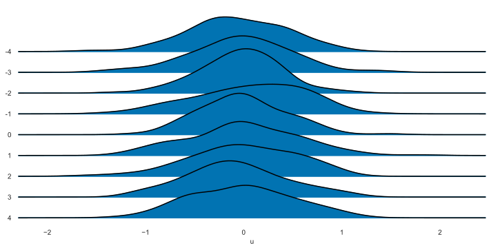
Недійсна екзогенність, i.e., \(\mathop{E}\left[ u \mid X \right] \neq 0\)
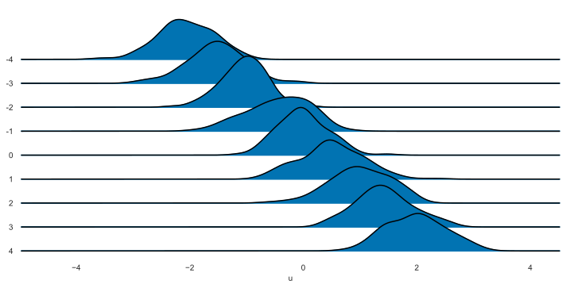
Невизначеність та помилки
Щось ще?
До цього моменту ми знаємо, що МНК має деякі хороші властивості, і ми знаємо, як оцінити перетин і коефіцієнт нахилу за допомогою МНК.
Наш поточний робочий процес:
Отримати дані (точки зі значеннями \(x\) і \(y\))
Побудувати модель \(y\) на \(x\)
Побудуйте лінію МНК (тобто, \(\hat{y} = \hat{\beta}_0 + \hat{\beta}_1\))
Готово?
Але чого ми навчимося з цієї вправи?
Щось ще? Так!
Але чого ми навчимося з цієї вправи?
Наскільки ми повинні бути впевнені в точності наших оцінок?
Наскільки добре наша модель пояснює зміну \(y\)?
Ми повинні вміти справлятися з невизначеністю.
Вчимося на помилках
Як показало наше попереднє моделювання, наша проблема з невизначеністю полягає в тому, що ми не знаємо, чи наша вибіркова оцінка близька чи далека від невідомого параметра генеральної сукупності.
Проте ще не все втрачено. Ми можемо використовувати помилки \(\left(e_i = y_i - \hat{y}_i\right)\), щоб зрозуміти, наскільки добре наша модель пояснює варіацію \(y\).
Коли здається, що наша модель виконує «гарну» роботу, ми можемо з більшою впевненістю використовувати її, щоб дізнатися про зв’язок між \(y\) і \(x\).
Тепер нам просто потрібно формалізувати вищезазначене.
Вчимося на помилках
Спочатку ми оцінимо дисперсію \(u_i\) (нагадаємо: \(\mathop{\text{Var}} \left( u_i \right) = \sigma^2\)), використовуючи наші квадрати помилок, тобто,
\[ s^2 = \dfrac{\sum_i e_i^2}{n - k} \]
де \(k\) дає кількість параметрів моделі, яку ми оцінюємо (наприклад, \(\beta_0\) і \(\beta_1\) дадуть \(k=2\)).
\(s^2\) є незміщеною оцінкою \(\sigma^2\).
Вчимося на помилках
Дисперсія \(\hat{\beta}_1\) (для простої лінійної регресії) дорівнює
Ми використовуємо стандартну помилку \(\hat{SE_{\hat{\beta}_1}}\) разом із самим \(\hat{\beta}_1\), щоб дізнатися про параметр \(\beta_1\).
Після отримання розподілу \(\hat{\beta}_1\), у нас є два (пов’язаних) варіанти формального статистичного висновку щодо нашого невідомого параметра \(\beta_1\):
Довірчі інтервали: Використовуйте оцінку та її стандартну помилку, щоб створити інтервал, який при повторенні зазвичай міститиме справжній параметр.
Перевірка гіпотези: Визначте, чи є статистично значущі докази відхилення гіпотетичного значення або діапазону значень.
Довірчі інтервали
Довірчі інтервали
Будуємо довірчі інтервали рівня \((1-\alpha)\) для \(\beta_1\)\[ \hat{\beta_1}\ \pm t_{\alpha/2,\text{df}} \, \mathop{\hat{\text{SE}}} \left( \hat{\beta_1} \right) \]
\(t_{\alpha/2,\text{df}}\) позначає \(\alpha/2\) квантиль \(t\) розподілу з \(n-k\) ступенями свободи.
Довірчі інтервали
Будуємо довірчі інтервали рівня \((1-\alpha)\) для \(\beta_1\)\[ \hat{\beta_1}\ \pm t_{\alpha/2,\text{df}} \, \mathop{\hat{\text{SE}}} \left( \hat{\beta_1} \right) \]
Наприклад, 100 спостережень, два коефіцієнти (тобто, \(\hat{\beta}_0\) і \(\hat{\beta}_1 \implies k = 2\)), і \(\alpha = 0,05\) ( для 95% довірчого інтервалу) дає нам \(t_{0,025,\,98} = -1.98\)
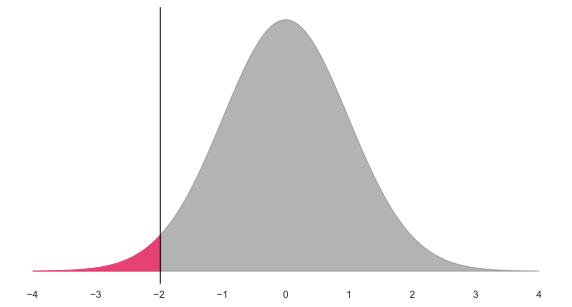
Довірчі інтервали
Будуємо довірчі інтервали рівня \((1-\alpha)\) для \(\beta_1\)
Отже, наш 95% довірчий інтервал становить \(0.7216 \pm 1.98 \times 0.067 = \left[ 0.589,\, 0.854 \right]\)
Довірчі інтервали
Отже, ми маємо довірчий інтервал для \(\beta_1\), тобто, \(\left[ 0.589,\, 0.854 \right]\).
Що це означає?
Неофіційно: Довірчий інтервал дає нам область (інтервал), в якій ми можемо певною мірою довіряти щодо вмісту параметра.
Більш формально: Якщо неодноразово робити вибірку з нашої сукупності та будувати довірчі інтервали для кожної з цих вибірок, \((1-\alpha)\) відсотків наших інтервалів (наприклад, 95%) міститиме параметр генеральної сукупності десь в інтервалі.
Тепер повернемося до нашої симуляції…
Довірчі інтервали
Ми відібрали 10 000 вибірок (кожна розміром \(n = 30\)) із нашої сукупності та оцінили нашу регресійну модель для кожної з цих симуляцій:
Тепер давайте оцінимо 95% довірчі інтервали для кожного з цих інтервалів…
Довірчі інтервали
З нашого попереднього моделювання: 97.5% 95% довірчих інтервалів містять справжнє значення параметра \(\beta_1\).
Тестування гіпотез
Тестування гіпотез
У багатьох дослідженнях ми хочемо знати більше, ніж точкову оцінку або діапазон значень. Ми хочемо знати, що наші статистичні дані говорять про існуючі теорії.
Ми хочемо перевірити гіпотези, висунуті чиновниками, політиками, економістами, науковцями, друзями, дивними сусідами тощо.
Приклади
Збільшення присутності поліції зменшує злочинність?
Будівництво гігантської стіни зменшує злочинність?
Розпуск уряду згубно впливає на економіку?
Чи легальний канабіс зменшує водіння в нетверезому стані або зменшує вживання опіоїдів?
Чи стандарти якості повітря покращують здоров’я та/або зменшують кількість робочіх місць?
Тестування гіпотез
Перевірка гіпотез спирається на дуже схожі результати та інтуїцію.
Хоча невизначеність, звичайно, існує, ми все ще можемо побудувати надійні статистичні тести (відкидаючи або не відхиляючи висунуту гіпотезу).
МНК t тест: Наша (нульова) гіпотеза стверджує, що \(\beta_1\) дорівнює значенню \(c\), тобто, \(H_o:\: \beta_1 = c\)
З властивостей МНК ми можемо показати, що тестова статистика
це означає, що наша тестова статистика є більш екстремальною, ніж критичне значення.
Крім того, ми можемо обчислити p-значення, яке супроводжує нашу тестову статистику, що фактично дає нам імовірність побачити нашу тестову статистику або більш екстремальну тестову статистику, якщо нульова гіпотеза вірна.
Дуже малі p-значення (зазвичай < 0,05) означають, що ми навряд чи побачимо наші результати, якби нульова гіпотеза дійсно була вірною — ми схильні відхиляти нуьлову гіпотезу для p-значень нижче 0,05.
Тестування гіпотез
import statsmodels.formula.api as smfresults = smf.ols('y ~ x', pop_df).fit()print(results.summary())
\(t_\text{stat} = 10.811\) та \(t_\text{0.975, 98} = -1.98\)
p-значення \(< 0,05\)
Тому ми відкидаємо \(H_0\)!
Тестування гіпотез
Повертаємося до нашої симуляції! Давайте подивимося, що насправді робить наша \(t\) статистика.
У цій ситуації ми фактично можемо знати (і забезпечити) нульову гіпотезу, оскільки ми згенерували дані.
Для кожного з 10 000 зразків ми обчислимо статистику \(t\), а потім побачимо, скільки статистичних даних \(t\) перевищує наше критичне значення (-1.98, як вище).
Відповідь має бути приблизно 5 відсотків — наш рівень \(\alpha\).
Тестування гіпотез
У нашому моделюванні 2.1% нашої статистики \(t\) відхиляє нульову гіпотезу.
Розподіл нашої статистики \(t\) (заштрихування областей відхилення).
Відповідно, 2.1% наших значень \(p\) відхиляє нульову гіпотезу.
Розподіл наших значень \(p\) (заштрихування значень \(p\) нижче 0,05).
F-тест
Іноді можна зустріти \(F\)-тести.
Ми використовуємо \(F\)-тести для перевірки гіпотез, які включають кілька випадків (наприклад, \(\beta_1 = \beta_2\) або \(\beta_3 + \beta_4 = 1\)),
а не одна проста гіпотеза (наприклад, \(\beta_1 = 0\), для якого ми просто використаємо тест \(t\)).
F-тест
Приклад
Економісти люблять казати: «Гроші взаємозамінні».
Уявіть собі, що ми можемо захотіти перевірити, чи дійсно гроші, отримані як дохід, мають такий же вплив на споживання, як гроші, отримані від податкових знижок.
Щоб перевірити нульову гіпотезу \(H_o :\: \beta_1 = \beta_2\) проти \(H_a :\: \beta_1 \neq \beta_2\), ми використовуємо статистику \(F\)\[
\begin{align}
F_{q,\,n-k-1} = \dfrac{\left(\text{ESS}_r - \text{ESS}_u\right)/q}{\text{ESS}_u/(n-k-1)}
\end{align}
\] який (як випливає з назви) відповідає розподілу \(F\) із ступенями свободи в чисельнику \(q\) і ступенями свободи в знаменнику \(n-k-1\).
Тут \(q\) — це кількість обмежень, які ми накладаємо через \(H_o\).
F-тест
Приклад, продовження
\(\text{ESS}_r\) – це сума квадратів помилок (ESS) з нашої обмеженої моделі\[ \text{Споживання}_i = \beta_0 + \beta_1 \left( \text{Дохід}_{i} + \text{Знижка}_i \right) + u_i \]
а \(\text{ESS}_u\) – це сума квадратів помилок (ESS) з нашої необмеженої моделі\[ \text{Споживання}_i = \beta_0 + \beta_1 \text{Дохід}_{i} + \beta_2 \text{Знижка}_i + u_i \]
Тест \(F\) порівнює ефективність необмеженої моделі з ефективність обмеженої моделі, використовуючи їхні \(\text{ESS}\).
Зверніть увагу на нашого старого друга ESS: \(\sum_i \left( y_i - \hat{y}_i \right)^2 = \sum_i e_i^2\).
\(R^2\) буквально вказує нам частку дисперсії в \(y\), яку враховує наша модель. Таким чином \(0 \leq R^2 \leq 1\).
\(R^2\)
Проблема: коли ми додаємо змінні до нашої моделі, \(R^2\)постійно збільшується.
Щоб побачити цю проблему, ми можемо змоделювати набір даних із 10 000 спостережень за \(y\) і 1000 випадкових змінних \(x_k\). Немає зв’язку між \(y\) і \(x_k\)!
Псевдокод симуляції:
Згенеруйте 10 000 спостережень \(y\)
Згенеруйте 10 000 спостережень за змінними від \(x_1\) до \(x_{1000}\)
Регресія:
LM1: регресія \(y\) на \(x_1\); запис R2
LM2: регресія \(y\) на \(x_1\) і \(x_2\); запис R2
LM1000: регресія \(y\) на \(x_1\), \(x_2\) і \(x_3\); запис R2
…
LM1000: регресія \(y\) на \(x_1\), \(x_2\), …, \(x_{1000}\); запис R2
\(R^2\)
Проблема: коли ми додаємо змінні до нашої моделі, \(R^2\)постійно збільшується.
Взаємодії дозволяють змінювати вплив однієї змінної залежно від рівня іншої змінної.
Приклади
Чи змінюється вплив навчання на оплату за статтю?
Чи змінюється вплив статі на оплату залежно від раси?
Чи змінюється вплив навчання на оплату праці залежно від досвіду?
Взаємодії
Раніше ми розглядали модель, яка дозволяла жінкам і чоловікам мати різну заробітну плату, але модель припускала, що вплив навчання на оплату праці буде однаковим для всіх:
Подібним чином \(\beta_1\) дає очікувану віддачу від додаткового року навчання для чоловіків. Таким чином, \(\beta_3\) дає різницю у віддачі від навчання для жінок і чоловіків.
Лог-лінійна специфікація
В економіці ви часто побачите змінену залежну змінну (логарифмічну) з лінійними (не логарифмічну) пояснювальними змінними, наприклад,
Ця специфікація змінює нашу інтерпретацію коефіцієнтів нахилу.
Інтерпретація
Збільшення нашої пояснювальної змінної на одну одиницю збільшує залежну змінну приблизно на \(\beta_1\times 100\) відсотків.
Приклад: Додатковий рік навчання збільшує платню приблизно на 3 відсотки (для \(\beta_1 = 0,03\)).
Лог-лінійна специфікація
Виведення
Розглянемо лог-лінійну модель
\[ \log(y) = \beta_0 + \beta_1 \, x + u \]
і диференціал
\[ \dfrac{dy}{y} = \beta_1 dx \]
Таким чином, незначна зміна в \(x\) (тобто, \(dx\)) призводить до \(\beta_1 dx\)відсоткової зміни в \(y\).
Лог-лінійна специфікація
Оскільки логарифмічно-лінійна специфікація має іншу інтерпретацію, вам потрібно переконатися, що вона відповідає вашому процесу/моделі генерування даних.
\(x\) змінює \(y\) у абсолютних значенняї (наприклад, збільшення на 3 одиниці) або у відсотках (наприклад, збільшення на 10 відсотків)?
Тобто, ви повинні бути впевнені, що експоненціальний зв’язок має сенс:
Так само економетристи часто використовують логарифмічні моделі, в яких залежна змінна логарифмується і принаймні одна пояснювальна змінна логарифмується
Збільшення \(x\) на один відсоток призведе до зміни \(y\) на \(\beta_1\) відсотків.
Часто трактується як еластичність.
Лог-логарифмічна специфікація
Виведення
Розглянемо модель log-log
\[ \log(y) = \beta_0 + \beta_1 \, \log(x) + u \]
і диференціал
\[ \dfrac{dy}{y} = \beta_1 \dfrac{dx}{x} \]
який говорить, що при збільшенні \(x\) на один відсоток ми побачимо збільшення \(y\) на \(\beta_1\) відсоток. Як еластичність:
\[ \dfrac{dy}{dx} \dfrac{x}{y} = \beta_1 \]
Лог-лінійна специфікація з бінарною змінною
Примітка
Якщо у вас є логарифмічно-лінійна модель із двійковою змінною індикатора, інтерпретація коефіцієнта для цієї змінної змінюється.
Розглянемо
\[ \log(y_i) = \beta_0 + \beta_1 x_1 + u_i \]
для двійкової змінної \(x_1\).
Тепер інтерпретація \(\beta_1\)
Коли \(x_1\) змінюється з 0 на 1, \(y\) зміниться на \(100 \times \left( e^{\beta_1} -1 \right)\) відсотків.
Коли \(x_1\) змінюється з 1 на 0, \(y\) зміниться на \(100 \times \left( e^{-\beta_1} -1 \right)\) відсотків.
Лог-логарифмічна специфікація
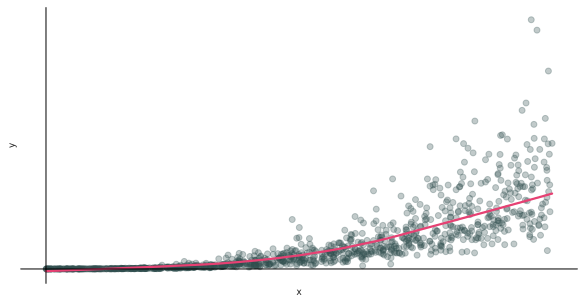
Контрольні питання
Загальні Концепції та Кореляція
Що таке коефіцієнт кореляції у статистичному сенсі? Які значення він може приймати?
Поясніть різницю між коваріацією та кореляцією. Чому кореляція часто є більш зручною мірою?
Наведіть формулу для коефіцієнта кореляції Пірсона.
Як перевіряється гіпотеза про те, що коефіцієнт кореляції дорівнює нулю (\(H_0: r = 0\))? Яка статистика критерію використовується?
Які основні умови (припущення) для коректного застосування t-критерію Стьюдента при перевірці гіпотези про кореляцію?
Що ілюструють приклади “Квартет Енскомба” та “Datasaurus Dozen” стосовно кореляційного та регресійного аналізу?
Що таке “хибна кореляція” (spurious correlation)? Наведіть приклад або поясніть суть явища.
Генеральна Сукупність, Вибірка та Основи Регресії
Поясніть різницю між моделлю регресії для генеральної сукупності та моделлю регресії на основі вибірки. Які позначення використовуються для параметрів та залишків у кожному випадку?
Чому важливо розрізняти генеральну сукупність та вибірку при побудові регресійних моделей? Що ілюструє симуляція Монте-Карло на слайдах?
Що таке \(\hat{y}_i\) у контексті регресійної моделі?
Оцінювання Параметрів Регресії (МНК)
Що означає абревіатура МНК (OLS)? Який основний принцип цього методу?
Яку величину мінімізує метод найменших квадратів (МНК) для знаходження “найкращої” лінії регресії? Напишіть формулу.
Наведіть формули для оцінок МНК \(\hat{\beta}_0\) та \(\hat{\beta}_1\) у простій лінійній регресії.
Які основні властивості оцінок, отриманих методом МНК (з точки зору зміщення та дисперсії)? Що таке BLUE?
Припущення МНК та Невизначеність
Перелічіть ключові припущення методу МНК.
Поясніть припущення екзогенності (\(\mathop{E}\left[ u \mid X \right] = 0\)). Чому воно є важливим?
Як оцінюється дисперсія випадкових збурень (\(\sigma^2\)) на основі вибіркових даних?
Що таке стандартна помилка оцінки коефіцієнта регресії (\(\mathop{\hat{\text{SE}}} \left( \hat{\beta}_1 \right)\))? Що вона показує?
Від чого залежить дисперсія (а отже, і стандартна помилка) оцінки коефіцієнта нахилу \(\hat{\beta}_1\)?
Довірчі Інтервали та Перевірка Гіпотез
Як будується довірчий інтервал для коефіцієнта регресії \(\beta_1\)?
Як інтерпретується 95% довірчий інтервал для коефіцієнта \(\beta_1\)?
Як формулюється типова нульова гіпотеза (\(H_0\)) при перевірці значущості коефіцієнта регресії \(\beta_1\)? Яка альтернативна гіпотеза (\(H_a\))?
Як розраховується t-статистика для перевірки гіпотези \(H_0: \beta_1 = c\)?
Як приймається рішення про відхилення нульової гіпотези на основі t-статистики або p-значення?
У яких випадках використовується F-тест у регресійному аналізі? Чим він відрізняється від t-тесту?
Оцінювання Якості Моделі та Інтерпретація Коефіцієнтів
Що таке коефіцієнт детермінації (\(R^2\))? Що він показує?
Яка основна проблема використання \(R^2\) при порівнянні моделей з різною кількістю незалежних змінних?
Як скоригований \(R^2\) (\(\overline{R}^2\)) вирішує проблему звичайного \(R^2\)?
Як інтерпретується коефіцієнт \(\beta_1\) у моделі \(y = \beta_0 + \beta_1 x + u\), якщо \(x\) та \(y\) - неперервні змінні?
Як змінюється інтерпретація \(\beta_1\) у множинній регресії \(y = \beta_0 + \beta_1 x_1 + \beta_2 x_2 + u\)?
Як інтерпретуються коефіцієнти \(\beta_0\) та \(\beta_1\) у моделі \(y = \beta_0 + \beta_1 D + u\), де \(D\) - фіктивна (бінарна 0/1) змінна?
Що дозволяє моделювати включення взаємодії між змінними (наприклад, \(x_1 \times x_2\))? Як інтерпретувати коефіцієнти в моделі з взаємодією?
Як інтерпретується коефіцієнт \(\beta_1\) у лог-лінійній моделі \(\log(y) = \beta_0 + \beta_1 x + u\)?
Як інтерпретується коефіцієнт \(\beta_1\) у лог-логарифмічній моделі \(\log(y) = \beta_0 + \beta_1 \log(x) + u\)?
Як інтерпретується коефіцієнт \(\beta_1\) для бінарної змінної \(x_1\) у лог-лінійній моделі \(\log(y) = \beta_0 + \beta_1 x_1 + u\)?